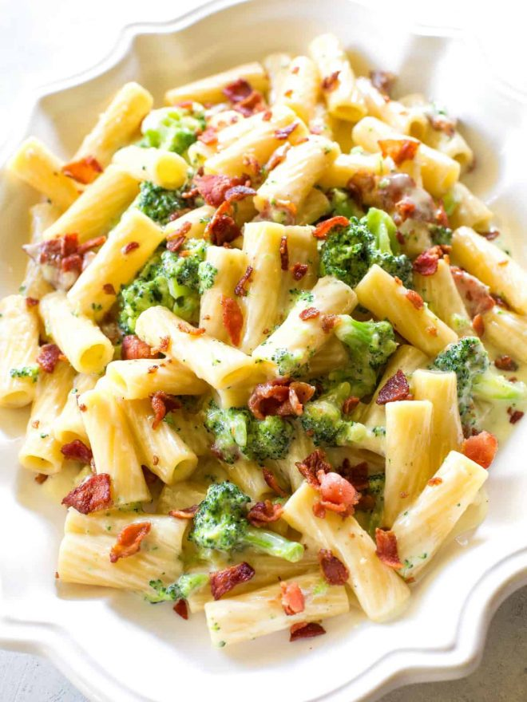

One pot bacon broccoli pasta

INGREDIENTS
- 4 strips of bacon, cut into chunks
- 2 cloves garlic, minced
- 2 cups dry rigatoni pasta, (or other small shape like penne)
- 2 cups heavy cream
- 1 1/2 cups low-sodium chicken broth
- 1/2 teaspoon salt, (and pepper to taste)
- 1/4 teaspoon crushed red pepper
- 2 cups broccoli florets
- 1/4 cup grated Parmesan cheese, (more for sprinkling on top)
INSTRUCTIONS
- In a large saucepan, pot or Dutch oven, cook the bacon until crispy. Remove bacon from pan and drain on paper
towels. Drain fat from the pot leaving about 1 tablespoon in the pot.
- Add the garlic and sautee for about 30 seconds. Add the uncooked pasta, cream, chicken broth, salt (and pepper),
and crushed red pepper. Stir. Bring to a boil then reduce to a simmer. Cover and cook for about 6 minutes making
sure to stir once in a while and keep noodles covered in liquid.
- Add the broccoli to the pot and cook another 5-7 minutes or until the broccoli is soft. Continue cooking until
sauce is a little thicker. It will be thin and then thicken towards the end. Stir in the Parmesan and reserved
bacon.
- Serve immediately and top with additional Parmesan.